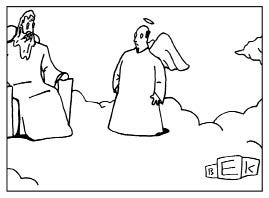

Metafizik kafadan Büyük Soru'ya dalar: Varlık nedir?
Gerçekliğin doğası nedir? Özgür irademiz var mı?
Bir topluiğnenin başında kaç melek dans edebilir
Bir ampul değiştirmek için kaçını çağırmalıyız?
DIMITRI: Son zamanlarda canımı sıkan bir konu var, Tasso.
TASSO: Neymiş?
DIMITRI: Tüm bunların anlamı ne?
TASSO: Tüm bunlar derken?
DIMITRI: İşte... Yaşam, ölüm, aşk... Şu aşurenin içine koyulabilen ne varsa...
TASSO: Bunların bir anlamı olduğunu da nereden çıkardın?
DIMITRI: E, olmalı çünkü. Yoksa yaşam şey olurdu...
TASSO: Ne?
DIMITRI: Ben iki tek atayım...
Teoloji
Evrenin bir amacı var mıdır?
Aristoteles'e göre her şeyin bir telos'u, ulaşması gereken içsel birereği vardır. Bir meşe palamudunun telos'u meşe ağacıdır. Meşe palamudunun "ereği" budur. Kuşların, arıların erekleri vardır... Kuru fasulyenin bile. Gerçekliğin yapısının bir parçasıdır bu.
Biraz soyut mu geldi söylediklerimiz? Öyleyse Bayan Goldstein'ın yardımıyla telos kavramını göklerden yere indirelim.
Bayan Goldstein iki torunuyla gezmeye çıkar. Yolda karşılaştığı bir arkadaşı laf arasında çocukların yaşını sorar. Bayan Goldstein hemen yanıtı yapıştırır: "Doktor beş, avukat yedi yaşında."
Ne dersiniz, insan yaşamının da bir telos'u var mıdır?
Aristoteles'e sorarsanız evet. Ona göre insan yaşamının telos'u mutluluktur. Filozofar insanlık tarihi boyunca bu saptamayı tartışıp durmuştur. Aristoteles'ten yedi asır sonraysa Aziz Augustine, yaşamın telos'unun Tanrı sevgisi olduğunu düşünecektir. Yirminci yüzyıl varoluşçusu Martin Heidegger ise, insanın telos'unun otantik insanlık durumunu, özellikle de ölümü reddetmeden yaşamak olduğu fkrindeydi. Mutluluk mu? Ay, ne banal!
Ne kadar filozof varsa o kadar yaşamın anlamına dair fkir, ne kadar yaşamın anlamına dair fkir varsa o kadar da yaşamın anlamına dair fıkra vardır.
Hayatın anlamını arayan bir adam, guruların en bilgesinin Hindistan'ın en yüksek dağının zirvesinde yaşadığını öğrenir. Uzun uğraşlardan sonra dağı bulup tırmanmaya başlar. Dağ öylesine diktir ki defalarca kayar, yuvarlanır, düşer. Ama sonunda doruğa ulaşır. Her yanı yara bere içindedir ama hiç aldırmaz. İşte hayatın sırrını bilen o yüce guru bağdaş kurmuş, karşısında oturmaktadır.
"Ey bilgeler bilgesi," der adam, "sana hayatın sırrını sormaya geldim."
"Ha, evet, hayatın sırrı," der guru. "Hayatın sırrı, harçtır."
"Harç mı? Ne yani, ben onca eziyete katlandıktan sonra şimdi sen bana hayatın sırrı harç mı diyorsun ?"
Guru omuz silker. " Yoksa değil mi?"
Guru'nun altını çizdiği nokta çok açık: Yaşamın telos'u öyle hazır formüllere sığdırılamaz. Bu sorunun peşine düşen kaygan bir zeminde yol alacağını bilmelidir. İşin doğrusu böyle bir sorunun peşinden gitmek de, öyle herkesin harcı değildir.
Hayatın telos'u —insanların ne olmaları gerektiği— ile belli bir bireyin telos'u —ne olmak istediği— arasında bir ayrım vardır. Aşağıdaki fıkranın kahramanı Dişçi Sam gerçekten yaşamın evrensel telos'unu mu arıyor yoksa sadece kendi istediğini mi yapıyor? Belki buna kesin bir yanıt veremeyebiliriz ama annesinin, oğlunun hayatının telosu hakkında kesin bir fkre sahip olduğu gayet açık:
Philadelphialı dişçi Sam Lipschitz, hayatın anlamını bulmak için Hindistan'a gider. Aylar geçer, kendinden bir haber çıkmaz. Bunun üzerine annesi oğlunu bulmak üzere yola çıkar. Hindistana'a vardığında çevresindekilere buraların en bilgesinin kim olduğunu sorar. Tavsiye edilen gurunun yaşadığı yere vardığında kapıdaki görevliler onu durdururlar. Guruyla görüşebilmek için bir hafta beklemesi gerektiğini, görüştüğündeyse ona sadece üç kelime söyleyebileceğini anlatırlar. Kadın, sarf edeceği üç kelimeyi düşünerek sabırla bekler. Nihayet görüşme günü gelip gurunun karşısına çıkarıldığında şunları söyler: "Eve dön, Sam!"
* * *
Sözlüklerde "Metafizik" kelimesine bakarsanız sözcüğün Aristoteles'in bir çalışmasının başlığından geldiğini görürsünüz. Sözlüğe göre metafizik bilimsel gözlemin ötesinde (meta) yer alan soyut düşünce seviyesindeki sorularla ilgilenir. Ancak işi biraz kurcalandığınızda bunun Latince post hoc hokum denen bir durumdan kaynakladığı ortaya çıkar. Aristoteles aslında bu çalışması için bilimsel gözlemin ötesindeki sorularla ilgilenmesinden hareketle "Metafizik" başlığını hiç kullanmamıştır. İşin aslı bu ad, M.S. birinci yüzyılda Aristoteles'in eserlerini düzenleyen bir editörün, filozofun "Fizik" üzerine çalışmasının ardından geldiği için ilgili bölüme "—den sonra" (ötesi) anlamında "Meta" başlığını seçmesinden doğmuştur.
* * *
Özcülük
Gerçeğin yapısı nedir? Şeyleri neyseler o kılan öznitelikler nelerdir? Ya da tersten sorarsak şeylerin özüne ait olmayan nitelikler nelerdir?
Aristoteles, özsel ve ilineksel özellikler diye bir ayrım yapmıştı. Ona göre, özsel özellikler bir şeyin onlar olmadan olduğu şey olamayacağı özelliklerken, ilineksel özellikler bir şeyin neliğini değil nasıllığını belirleyen özelliklerdi. Aristoteles, örneğin akıllı olmanın bir insan için özsel bir özellik olduğunu ve Sokrates insan olduğundan, Sokrates'in akıllı olmasının onun Sokrates olmasının özüne ait olduğunu düşünüyordu. Akıllı olma özelliği olmasaydı Sokrates, Sokrates olamazdı. Bu durumda aslında insan bile olamayacağına göre, nasıl Sokrates olabilirdi ki? Diğer yandan Aristoteles, Sokrates'in basık burunlu oluşunun onun yalnızca ilineksel bir özelliği olduğunu; bu burun biçiminin Sokrates'in nasıl olduğunun bir parçası olsa da onun ne veya kim olduğunun özünü teşkil etmediğini söylüyordu. Başka bir deyişle, Sokrates'ten akıllı olma özelliğini alırsanız o artık Sokrates olmayacaktır, ama ona estetik ameliyatı yaptırsanız, o sadece güzel burunlu bir Sokrates olacaktır. Bu da insanın aklına şu fıkrayı getiriyor:
Yetmişine merdiven dayayan Thompson, daha uzun yaşayabilmek için yaşam tarzını tamamen değiştirmeye karar verir. Sıkı bir diyete başlar, koşar, yüzer ve güneşlenir. Üç ay içinde on kilo verir, göbeği on santim daralırken göğüs kafesi beş santim genişler. İyice dinçleşen ve bronzlaşan Thompson başarısını yepyeni bir saç modeliyle taçlandırmaya karar verir. Yeni saç modeliyle berberden çıkıp karşıdan karşıya geçerken bir otobüsün altında kalır.
Son nefesini verirken, "Tanrım," diye haykırır, "nasıl yapabildin bunu bana?"
Yukarından yanıt gelir: "Valla kusura bakma Thompson; tanıyamadım seni."
Zavallı Thompson aslında bazı ilineksel özelliklerini değiştirmiştir, bu nedenle bütün bu değişikliklere karşın biz onun özünde hala Thompson olduğunu biliyoruz; aslında bunu Thompson da biliyordu. Zaten bu iki koşul fıkranın kuruluşunun özüne aittir. İşin ironik yanı, fıkrada Thompson'ı tanıyamayan tek karakter, özü her şeyi bilmek olan Tanrı'dır.
Özsel ve ilineksel özellikleri bu yolla betimleyen birçok fıkra vardır.
Abe: Bil bakalım: yeşil olan, duvara asılan ve ıslık çalan şey nedir?
Sol: Bilemeyeceğim.
Abe: Ringa balığı.
Sol: E ama ringalar yeşil değildir?
Abe: Yeşile boyarsın.
Sol: E ama ringayı duvara asmazsın?
Abe: Bir çiviyle bir çekice bakar.
Sol: E ama ringalar ıslık çalmaz?
Abe: E? Çalmasın.
Fıkranın aşağıdaki çeşitlemesi muhtemelen dost toplantılarında fazla işinize yaramayacaktır ama Felsefe Kurumu'nun yıllık toplantısında size epeyce puan kazandırabilir:
Abe: Yeşillik, duvara asılma ve ıslık çalabilme özelliklerine sahip 'X' nesnesi nedir?
Sol: Bu tarife uyan bir şey gelmiyor aklıma.
Abe: Ringa.
Sol: Ringanın yeşillik özelliği yoktur.
Abe: Özsel özellik anlamında doğru, Sol. Ama bir ringa ilineksel olarak yeşil olabilir, değil mi? Boya, göreceksin.
Sol: Ama ringa balıklarının duvara asılacak yerleri yoktur. Abe: Ama ya ilineksel olarak duvara çakarsan?
Sol: Bir ringa nasıl ilineksel olarak duvara çakılabilir? Abe: İnan bana. Her şey mümkündür. Felsefe bu.
Sol: Peki. Ama bir ringa balığı ıslık çalamaz. İlineksel olarak bile.
Abe: İyi. Dava et beni o zaman.
Sol ve Abe hiç ses çıkarmayan Felsefe Kurumu üyelerine dönerler:
Sol: Ne bu? Stoacılar toplantısı mı? Nietzsche bile Vatikan'a sardırdığında daha çok kahkaha almıştı yahu...
Bazen bir nesnenin ilk bakışta ilineksel görünen özelliklerinin sadece bazı sınırlar içinde ilineksel olduğu ortaya çıkar:
"Filler neden büyük, gri ve kırışıktır?"
"Çünkü ufak, beyaz ve yuvarlak olsalardı aspirin olurlardı."
Ufak bir fil hayal ederek ona "ufak bir fil" diyebiliriz. Beyaz bir fil hayal ederek ona "beyaz bir fil" diyebiliriz. Kırışıksız bir fil de, "kırışıksız bir fil" olur. Başka bir deyişle büyüklük, grilik ve kırışıklılık, Aristoteles'in bir filin özsel olarak ne olduğunu tanımlama sınavını geçemezler; onlar fillerin genel ve ilineksel olarak nasıl olduklarını betimlerler. Ancak fıkra bunun bir noktaya kadar doğru olduğunu söyler: Aspirin gibi ufak, beyaz ve yuvarlak bir şey bir fil olamaz ve böyle bir nesneyle karşılaştığımızda aklımıza, "Hey, ağzına attığın bir aspirin mi, yoksa alışılmamış türden bir fil mi?" diye sormak gelmez.
Burada vurgulanan, büyüklük, grilik ve kırışıklığın bir filin özsel nitelikleri olma konusunda yeterince kesin terimler olmayışlarıdır. Bir şeyin fil olup olmadığını belirlemede, diğer niteliklerin yanında belli bir büyüklük derecesi ve belli bir renk seviyesi söz konusudur. Diğer yandan kırışıklık, belki kırmızı bir ringa[1] veya ıslık çalan bir ringadır.
Akılcılık
Şimdi sıra tümüyle farklı bir düşüncede; bize gerek duymadan hakkında ciltler dolusu fıkra üretilmiş bir metafizik ekolünde... Yalnız küçük bir sorun var. Bütün bu şakalar asıl meseleyi ıskalıyor.
On yedinci yüzyıl rasyonalist (akılcı) filozofu Gottfried Wilhelm Leibniz ünlü, "Mümkün dünyaların en iyisi budur," cümlesini sarf ettiğinde acımasız alayların hedefi olmuştu. Her şey sonraki yüzyılda Voltaire'in saf delikanlısı (Candide) ile felsefi akıl hocası Dr. Pangloss'un (Voltaire'in Leibniz yorumu) öyküsünü anlatan romanı Candide ile başladı. Genç Candide, yolculuklarında kırbaçlamalarla, haksız idamlarla, salgınlarla ve 1755'teki kenti yerle bir eden Lizbon depreminden esinlenmeyle sahnede yerini alan bir depremle karşılaşıyordu. Ancak hiçbir şey Dr. Pangloss'un "Mümkün dünyaların bu en iyisinde her şey en iyisi içindir" görüşünü sarsamıyordu. Candide, Anabaptist[2] Jacques'ı boğulmaktan kurtarmaya kalktığında Dr. Pangloss, Lizbon Körfezi'nin "özellikle içinde anabaptistlerin boğulması için şekillendiğini" kanıtlayarak engel oluyordu.
İki yüzyıl sonrasındaysa şakalara Leonard Bersnstein'in müzikali Candide eklenir; gösterinin en ünlü şarkısı "Mümkün tüm dünyaların en iyisi"nde Dr. Pangloss ve diğer oyuncuların ağzından Richard Wilbur'un, hepimizi kurban olmakta birleştirdiği için aslında savaşın ne büyük nimet olduğunu anlatan sözleri dökülecektir.
* * *
Terry Southern ile Mason Hoffenberg curcunaya, karşılaştığı her erkeğin kendisinden yararlanmasına rağmen iyimserliğini yitirmeyen saf bir genç kızın öyküsünü anlattıkları açık saçık versiyonla (Candy) katıldılar. Oyun 1964'te aralarında filozof Ringo Starr'ın da bulunduğu bol yıldızlı bir kadroyla sinemaya aktarıldı.
* * *
Çok eğlenceli... Ama ne yazık ki bütün bunlar Leibniz'in tezinin özünü yanlış anlıyor ve yorumluyor. Leibniz, bir rasyonalistti. Rasyonalist, (bilgiye ulaşmada duyuları ana yol olarak gören ampiristin, yani deneycinin tersine) bilgi edinmede aklı tüm diğer yollardan üstün görenleri tanımlamak için kullanılan felsefi bir terimdir. Leibniz, yaşadığımız dünyanın mümkün dünyaların en iyisi olduğuna sadece akla dayanan kanıtlarla varmıştı. Bu kanıtlamanın adımları şu şekilde özetlenebilir:
1. Tanrı bir dünya yaratmayı seçmeseydi dünya diye bir şey olmazdı.
2. "Yeter Sebep İlkesi," birden fazla seçenek bulunduğunda neden birinin değil, diğerinin gerçek olduğuna dair bir açıklama bulunmalıdır, der.
3. Tanrı belli bir dünyayı yaratmayı seçtiyse, bu sırada etrafta başka bir şey olmayacağından açıklama bizzat Tanrı'nın özellikleri arasında bulunmalıdır.
4. Tanrı hem her şeye kadir hem ahlâken kusursuz olduğuna göre, mümkün dünyaların en iyisini yaratmış olmalıdır. Eğer düşünürseniz, şartlar dâhilinde yarattığı dünya, tek mümkün dünyadır. Tanrı, her şeye kadir ve ahlâken kusursuz olması nedeniyle en iyisi olmayan bir dünya yaratmış olamaz.
Voltaire, Bernstein ve diğerleri ve Hoffenberg, hepsi Leibniz'i "İşler tıkırında, canım" demek istediğini düşünerek alaya almıştı. Oysa Leibniz dünyada kötülüğün bulunmadığını düşünmüyordu. Sadece Tanrı başka türlü yaratsaydı, dünyanın daha kötü olacağını öne sürüyordu.
Neyse ki Leibniz'in felsefesine ışık tutan birkaç espri var elimizde:
Bir iyimser, bu dünyanın, mümkün dünyaların en iyisi olduğunu düşünür.
Bir kötümserse sahiden öyle olmasından korkar.
Buradaki espri, iyimserin bu dünyanın mümkün dünyaların en iyisi olduğu fikrini kabul ettiğini, kötümserinse etmediğini ima etmektedir. Leibniz'in rasyonalist bakış açısından dünya ne ise odur; yukarıdaki espriyse iyimserlik ve kötümserliğin Leibniz'in tarafsız ve akılcı dünya betimlemesiyle uzaktan yakından ilişkisi bulunmayan kişisel tavırlar olduklarına dair bariz gerçeğin altını çizmektedir.
İyimser, "Bardağın yarısı dolu," der.
Kötümser, "Bardağın yarısı boş," der.
Rasyonalist ise, "Bardak gereğinden iki kat büyük," der.
Gayet açık, değil mi?
SONSUZLUK VE EBEDİYET
Göründüğü kadarıyla, ne kadar iyi veya kötü olursa olsun, bu dünyada kısa süreliğine bulunuyoruz. Ama neye kıyasla? Sınırsız sayıda yıla göre mi?

"İtiraf etmesi biraz utanç verici ama
olan biten hiçbir şeyin nedeni yok."
Leibniz karikatürdeki Tanrı'nın (yukarıdakiyle karıştırmayın) tam aksi yönüne gider. Rasyonalist sıfatıyla Leibniz herhangi bir şeyin, sanki yerine kolayca başka bir şey de olabilirmiş gibi "öylece oluverdiğini" kabul edemezdi. Ona göre, her durumu zorunlu kılan bir nedenin bulunması gerekirdi. Neden Seattle'da Albuquerque'den daha fazla yağmur yağar? Çünkü A, B ve C şartları tersinin gerçekleşmesini imkânsız kılar. A, B ve C şartları altında başka türlü olamaz. Buraya kadar başta Seattle'da oturanlar olmak üzere çoğumuz, Leibniz ile aynı düşüncededir. Ama Leibniz, bu ön şartların (A, B ve C) bile başka türlü olamayacağını öne sürmüştür. Onlardan öncekilerin ve öncekilerden öncekilerin ve ötesinin de... Olan herhangi bir şeyin olduğu şekilde olmasının nedeni başka türlü olamayacak olmasıdır anlamına gelen "Yeter Sebep İlkesi" budur. Seattle için bol yağmur ile bu yağmura yol açan tüm nedenleri barındırmayan bir evren, kozmos değil, kaos olacaktır.
Sonsuzluk sorunu metafizikçilerin kafasını karıştıran ezeli ve ebedi sorunlardandır. Metafizikçi olmayanlarınsa bunu pek de iplediği söylenemez:
İki inek çayırda otlamaktadır. Biri diğerine döner ve "Pi genellikle beş sayıyla yazılıyor ama aslında sonsuza kadar devam ediyor," der.
Diğer inek kafasını çevirir ve yanıtlar: "Mö."
Aşağıdaki fıkradaysa sonsuzluk fikri bir başka eğlenceli felsefi kavram olan görelilikle birleştiriliyor:
Doktor, kadına altı ay ömrü kaldığını söyler. Kadın, "Yapabileceğim bir şey var mı?" diye sorar.
"Var," der doktor. "Bir muhasebeciyle evlenebilirsiniz."
"Hastalığıma ne faydası olacak bunun?"
"A, yok, hastalığınıza bir etkisi olmaz," der doktor. "Ama kalan altı ayınızı sonsuza dek uzuyormuş gibi hissetmenizi sağlayacaktır."
Bu fıkra, "Altı ay gibi sınırlı bir şeyin sonsuzluk gibi sınırsız bir şeyle benzeştirilmesi nasıl mümkündür?" felsefi sorusunu gündeme getirmektedir. Bu soruyu soranlarınsa hayatlarında bir muhasebeciyle hiç vakit geçirmedikleri açıktır.
Özgür İradeye Karşı Belirlenimcilik
Şimdi ve buradayız... Peki kaderimizi kontrol etmek elimizde mi?
Felsefe asırlardır bu soru üzerine mürekkep harcıyor: "İnsan karar verirken ve eyleme geçerken özgür müdür yoksa tüm karar ve eylemleri dış güçlerce mi (soyaçekim, çevre, tarih, kader, Microsoft...) belirlenir?"
Yunan tragedyacıları karakterin ve kaçınılmaz kusurlarının olayların gidişatını belirlemedeki etkisini özenle vurgulamışlardır.
Yirminci yüzyıl romancılarından Isaac Bashevis Singer, özgür iradeye inanıp inanmadığı sorulduğunda bıyık altından gülerek, "Başka seçeneğim yok," demişti. (Aslında bu bazı filozofların açıkça savundukları bir konumdur: "Kendi özgür irademize inanmak zorundayız, aksi durumda ahlâki sorumluluğumuza inanmak için temelimiz kalmaz, o zaman da ahlâki seçimlerimizin denetimimiz dışında olduğunu kabul etmek zorunda kalırız")
Davranışlarımızın denetimimiz dışındaki psikolojik güçler tarafından belirlendiğine inanmak ahlâki sorumluluk fikrini son derece aşındırmıştır. Bu tartışmalardan haberi olan bir katil yüzsüzce kendisini cinayete gofretindeki şekerin zorladığını söyleyebilir. Bu, "Şeytana uydum" bahanesinin psikoloji kılığına bürünmüş halidir.
Öte yandan, "Bana bunu Tanrı yaptırdı. Esasen Tanrı, evrendeki her şeyi en ufak ayrıntısına kadar belirlemiştir," diyen belirlenimciler (deterministler) de vardır. On yedinci yüzyıl Hollandalı Yahudi filozofu Baruch Spinoza ile on sekizinci yüzyıl Amerikan teologu Jonathan Edwards bu tür teolojik belirlenimciliğin yandaşıydı. Aşağıda okuyacağınız fıkradaki kartal, kurbağa ve kamyon şoförü büyük olasılıkla eylemlerine özgür iradeleriyle karar verdiklerini düşünmektedirler:
Musa, İsa ve sakallı bir ihtiyar golf oynuyormuş. Musa uzun mesafeli bir atış yapmış; top çim alana inmiş ama dosdoğru gidip yapay gölcüğe yuvarlanmış. Aynı anda Musa sopasını kaldırmış, gölcüğün suları ikiye ayrılmış ve top yoluna devam edip çimlere ulaşmış.
İsa da uzun bir atış yapmış. Onun vurduğu top da doğrudan gölcüğe gitmiş ama tam içine düşecekken havada asılı kalmış. İsa gitmiş, suyun üzerinde yürüyüp topu almış ve yeşilliğe bırakmış.
Sıra sakallı ihtiyara gelmiş. İhtiyarın vurduğu top doğrudan çitlere çarpıp yola fırlamış, o sırada yoldan geçen bir kamyondan sekip gerisingeri golf sahasına yönelmiş. Bu top da gölcüğe gidiyormuş ama gitmemiş, çiçeklerin arasına düşmüş. Çiçeklerin arasındaki bir kurbağa topu görür görmez atılıp ağzına alıvermiş. Tam o sırada bir kartal süzülerek gelmiş ve kurbağayı kapmış ve yükselmiş. Kartal, pençelerinde kurbağayla golf sahasının ucuna doğru ilerlerken kurbağa topu ağzından bırakmış ve top süzülerek doğrudan deliğe girmiş.
Bunun üzerine Musa, İsa'ya bakmış ve "Babanla golf oynamayı hiç sevmiyorum,"
Süreç Felsefesi
Bu olmalıydı... Sonunda her şeyde parmağı bulunan "Cebri Tanrı" kavrayışına itiraz edecek bir filozof gelecekti. Geldi de... Yirminci yüzyıl filozofu Alfred North Whitehead, Tanrı'nın geleceği belirlemeye gücünün yetmeyeceğini öne sürmekle kalmadı, savına geleceğin Tanrı'yı belirleyeceği görüşünü de kattı. Whitehead'in süreç felsefesine göre Tanrı ne her şeye kadirdir ne her şeyi bilendir. Tanrı olayların ilerleyişine göre değişen bir varlıktır. Ya da Yeni Çağcıların jargonuyla: "Tanrı var ya, acayip evrim geçirmiştir ha..."
Alvin dükkânında çalışırken yukarıdan gür bir ses işitir: "Alvin, işini devret!" Alvin aldırmaz ama aynı ses günlerce devam eder: "Alvin, işini üç milyon dolara devret." Haftalar sonra Alvin pes eder ve işini devreder.
Aynı gür ses bu sefer, "Alvin, Las Vegas'a git," der.
"Neden," diye sorar Alvin.
"Alvin, üç milyon dolarını al ve Las Vegas'a git. Hemen!"
Alvin boyun eğer, Las Vegas'a gider ve bir kumarhaneye girer.
Ses, "Alvin," der, "yirmi bir masasına git ve tüm parayı tek elde oyna."
Alvin tereddüt eder ama yine boyun eğer. Krupiye dağıtır, Alvin'e on sekiz gelir. Krupiyenin önündeki açık kartsa altılıdır.
"Alvin, kart al."
"Ne? Ama kasada..."
"Kart al dedim!"
Alvin krupiyeden bir kart ister ve önüne bir as gelir. On dokuz... Derin bir nefes alır.
"Alvin, bir kart daha al."
"Ne?"
"BİR KART DAHA AL!"
Alvin bir kart daha ister.Yine bir as gelir. Elinde yirmi vardır şimdi.
Ses bir kez daha, "Alvin, bir kart daha al," buyurur.
"Yirmi var elimde yahu!" diye bağırır Alvin.
Ses bu sefer iyice gürler: "BİR KART DAHA DEDİM!"
"Bir kart daha," der Alvin.Ve Krupiye önüne bir as daha verir.
Yirmi bir!
Aynı anda yukarıdaki ses gürler: "Vay be!"
Kendisini bile şaşırtabilen bir Tanrı fikri kime çekici gelmez ki?
Tasarruf İlkesi
Felsefede metafizik karşıtı bir damar hep olmuştur. Bu çizgi son iki yüz yılda bilimsel dünya görüşünün kazandığı zaferle doruğa ulaşmıştır. Rudolf Carnap ve Viyana Çevresi (sanıldığı gibi yetmişlerdeki bir disko grubu değildir) metafiziği, bilimin yürürlükten kaldırdığı akıldışı spekülasyonlar olarak bütünüyle yasadışı ilan edecek denli ileri gitmiştir.
Rudy&V.Ç.'ye sufle veren, "Ockham'ın Usturası" adıyla da bilinen tasarruf ilkesini ortaya atan on dördüncü yüzyıl teologu Ockhamlı William'dı. Söz konusu ilkenin buyruğuna göre, "Teoriler gereğinden daha karmaşık olmamalıdır," ya da Ockham'ın metafizik bakışına yaraşır şekilde söylenirse, "Teoriler varlıkları gereksizce çoğaltmamalıdır."
Isaac Newton'ın elmanın düşüşünü izleyip şöyle haykırdığını düşünün: "Buldum! Elmalar yukarıdan gremlinlerin, aşağıdansa trollerin çektiği bir halat çekme müsabakasının ortasında yer alırlar ve troller gremlinlerden güçlüdür!"
Böyle bir durumda Ockham kızacak ve "Tamam Isaac," diyecektir, "teorin gözlemlenebilir tüm olgular için geçerli, eyvallah ama programın dışına çıkmayalım çocuğum; sadeleştir şunu!"
Carnap'a da kafa sallamak düşecektir.
Beş yaşında bir çocuk, bir akşam, yemekten sonra babasına, "Annem nereye gitti?" diye sorar.
Baba cevaplar: "Annen bir Tupperware[3] partisine gitti."
Açıklama çocuğu bir anlığına tatmin etmiş görünse de çok geçmeden yeni bir soru gelir: "Tupperware partisi ne demek baba?"
Baba, basit bir açıklamanın en iyisi olacağını düşünür. "Eh," der, "Tupperware partilerinde bir grup hanım birlikte oturur ve birbirlerine plastik kaplar satar."
Çocuk kahkahayı basar. "Of ya baba!" der, "Sahiden nedir, söylesene."
Oysa Tupperware partilerinde sahiden bir grup hanım bir araya gelmekte ve birbirlerine plastik kaplar satmaktadırlar. Ama Tupperware firmasının pazarlamacıları müthiş metafizikçilerdir ve bizleri işin bundan çok daha karmaşık olduğuna inandırırlar.
* * *
DIMITRI: Sana basit bir soru sordum; bana on ayrı yanıt verdin. Pek de yardımcı olduğunu söyleyemeyeceğim doğrusu.
TASSO: Yardım arıyorsan sosyal hizmet görevlilerine başvuracaksın. Sparta'da tonla varmış, öyle duydum.
DIMITRI: Cık, benim bilmek istediğim hangi yanıtın doğru olduğu.
TASSO: Aha! İşte şimdi bir yerlere varıyoruz.